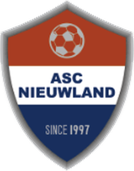

Wasmeer is thuis ongeslagen en scoort in elk duel, maar hield in — competitieduels — keer de nul. Alles draait om het duo Laurens en Victor. Toen die op vakantie waren, verloor Wasmeer bij NVC. Nieuwland pakte tegen dezelfde drie tegenstanders — punten, Wasmeer —.
Wasmeer in cijfers · competitie
Rood is een sterk punt van Wasmeer, blauw een kans voor Nieuwland.
Thuis ongeslagen. Doelsaldo —–—.
Goals per duel. Wasmeer scoorde in elk competitieduel.
Tegengoals per duel. De nul hielden ze nog nooit.
Keer als eerste achter. In — duels al binnen 15 minuten.
Tegengoals na minuut 75. Bij Sporting ging een 5-2 voorsprong nog verloren.
Goals na rust. Na een achterstand haalden ze nog — punten.
Onderling vergeleken
De volle balk is de betere waarde. Competitie, zonder beker.
Tijdlijn · uit de Instagram-posts van Wasmeer
Alle duels, ook de beker. Onder elke uitslag staat wat het team er zelf over schreef. De bekerpoule won Wasmeer met —–— in — duels.
Wanneer vallen de goals?
Sleutelspelers
Maker én afmaker. Scoort ook als invaller en maakte in de beker een hattrick tegen Victoria. Geef hem een vaste schaduw op het middenveld.
Maakte de enige goal bij Spakenburg en in de beker bij Eemboys. Gaat diep op de pass van Laurens, dus houd de ruimte achter je verdediging klein.
keer gaf de een de assist op de ander in de competitie. Samen maakten ze —% van de competitiegoals. Zonder hen (bij NVC) kwamen er alleen goals van Markwin en een eigen doelpunt.
Uit de captions
Bij NVC waren Laurens en Victor op vakantie, en Wasmeer verloor in de slotminuten. Bij hun terugkeer maakten ze allebei een hattrick tegen Loosdrecht.
Zaterdag wordt er op veld 4 gespeeld. Daar won Wasmeer met 7-1 van Loosdrecht, volgens de caption in de blubber. Dat klinkt als natuurgras: neem schroefnoppen mee als het regent.
Ze roemen hun strijd in de laatste minuten tegen Altius en Spakenburg. Toch vallen daar ook de tegengoals. Ze gaan vol voor de winst, en dat geeft ruimte achterin.
Na de 5-5 bij Sporting was de toon zuur over de verlenging van de scheidsrechter. Blijf zelf rustig in de duels; frustratie bij hen is jullie voordeel.
De ene week een fitte bank, de andere week (bij EDO) maar anderhalve wissel. Er speelden ruim twintig namen mee en de keepers Jesse en Joppe wisselen elkaar af.
Na de 4-1 tegen Huizen op Anna's Hoeve schreven ze dat ze niet voor een gelijkspel kwamen. Thuis spelen ze aanvallend en met bravoure.
Zo pakken we ze
Wasmeer komt vaak vroeg achter. Zet de eerste vijftien minuten hoog druk.
Een vaste man op Laurens, een verdediger voor Victor. Die twee maken het grootste deel van hun goals.
Tussen minuut 46 en 75 zijn ze het gevaarlijkst. Een voorsprong is tegen hen nooit veilig.
Ze lekken na minuut 75. Verdeel je krachten en houd frisse benen achter de hand.
Wasmeer raakt geïrriteerd door de scheids. Blijf zelf rustig en speel er gebruik van.
De ranglijst
Gelijk in punten, maar Nieuwland heeft twee duels minder gespeeld en de helft minder verliespunten.
| # | Team | G | W | GL | V | P | + | − |
|---|
| Datum | Tegenstander | Comp. | T/U | V | T |
|---|
| Datum | Tegenstander | T/U | V | T |
|---|
| # | Speler | Naam | Basis | Inval | Goals | Assists |
|---|
Alle cijfers komen uit screenshots en Instagram-posts: het programma, de stand, de spelerslijst en de Match Result-, Starting XI-posts en captions van wasmeer_zaterdag_2. Statistieken in cijfers, vergelijking, goalmomenten en spelerstabel gaan alleen over de competitie. De tijdlijn en het seizoensoverzicht tellen de beker mee. Een eigen doelpunt van NVC telt als Wasmeer-goal zonder maker. Van de bekerpoule zijn geen opstellingen bekend. Van Nieuwland zijn alleen de uitslagen bekend. De voorspelling en kansen zijn een inschatting.